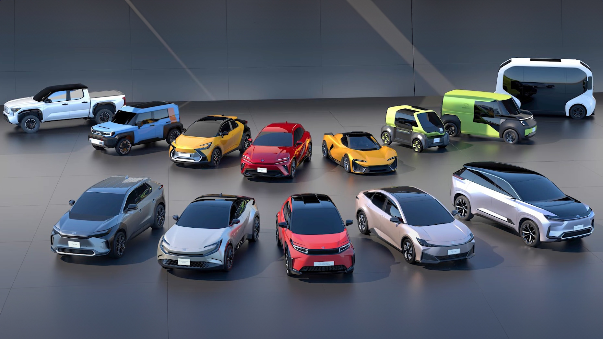

Types of Economical Cars

Economical cars come in various forms, each offering unique advantages in terms of fuel savings and overall cost of ownership. Understanding these types can help you pinpoint the best fit for your driving needs.
Hybrid Cars
Hybrid vehicles combine a traditional gasoline engine with an electric motor and battery pack. This allows them to seamlessly switch between electric power, gasoline power, or a combination of both, optimizing fuel consumption. They are particularly economical in stop-and-go city traffic, where the electric motor can power the car at low speeds and regenerative braking helps recharge the battery.
Electric Vehicles (EVs)
All-electric vehicles run solely on electricity, producing zero tailpipe emissions. Their primary economic benefit comes from significantly lower "fuel" costs, as electricity is generally cheaper than gasoline. EVs also boast fewer moving parts compared to gasoline cars, which often translates to reduced maintenance expenses like no oil changes or spark plug replacements. Brands leading the charge in EVs include **Kia** (e.g., EV3, Niro EV) and many other manufacturers rapidly expanding their electric lineups.
Plug-in Hybrid Electric Vehicles (PHEVs)
PHEVs offer a bridge between traditional hybrids and pure EVs. They have a larger battery than standard hybrids, allowing for a more substantial all-electric driving range before the gasoline engine kicks in. They can be charged from an external power source, providing the flexibility of electric-only commuting for shorter trips and the assurance of a gasoline engine for longer journeys. Examples include the **Toyota Prius Prime** and **Ford Escape Plug-In Hybrid**.
Efficient Gasoline-Powered Cars
Not all economical cars rely on electrification. Many conventional gasoline vehicles are engineered for impressive fuel efficiency through smaller, more advanced engines, aerodynamic designs, and lightweight construction. These cars often come with a lower initial purchase price. Brands like **Honda** (e.g., Civic), **Toyota** (e.g., Corolla), **Hyundai** (e.g., Elantra), **Mitsubishi** (e.g., Mirage), and **Nissan** (e.g., Versa, Sentra) offer strong contenders in this category. Their economy stems from optimizing the internal combustion engine for maximum miles per gallon.
Diesel Cars
While less common in some markets now, diesel cars can be highly economical due to diesel fuel's higher energy density compared to gasoline. This often results in better fuel efficiency, especially for highway driving. Modern diesel engines are also much cleaner than older versions. Some brands, particularly European ones like **BMW**, have offered efficient diesel options in the past.